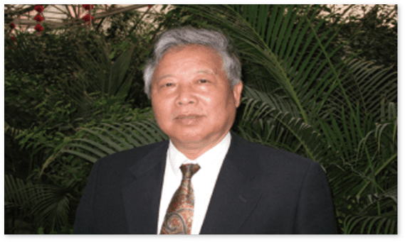

黑莓是营养丰富的超级水果
盛行于欧美
2000年前
古希腊
两千多年前，在孕育人类文明的古希腊，人们发现了黑莓，当地人用来治疗痛风、脑梗、烧伤等疾病，显著的效果让黑莓风靡欧洲。
17世纪中期
欧洲
17世纪中期欧洲人开始驯化并优化野生黑莓品种也被欧洲国家赞誉为“生命之果”、“黑钻石”
19世纪
美国
19世纪由美国引种到太平洋各洲截止目前，美国种植面积三万公顷，智利两万公顷。
1986年
中国
1986年由中国社科院植物研究所从美国引进的黑莓种植技术，在南京溧水白马镇成功引植上万亩种植面积。
黑莓在中国
始于1986年
1986年
1986年由中共科学院植物研究所从美国引植到南京溧水白马丘陵地带并获得成功。
1996年
1996年推广种植面积达到上万亩。
2009年
2009年上海生命之果生物科技公司与专家团队开始研发黑莓系列产品。

2010年-2016年
2010年-2016年，黑莓营养的研究成果实现突破性进展，袁勤生教授及其团队推出黑莓离心破壁专利技术，独家授权给上海生命之果生物科技公司。
2018年
2018年，上海易生健康与上海生命之果两大公司携手推广缤纷谷黑莓原液品牌，致力于让黑莓健康走进千家万户。
缤纷谷
缤纷谷品牌始于2009年，创始人李彬是大学老师。10年来一直专注于健康饮食领域的投资与推广，前期已经推出了缤纷谷餐。2018年开始，专注于做黑莓有机产品的推广。